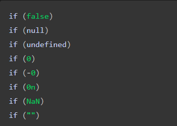
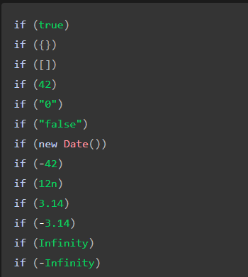

JAVASCRIPT Asoslari
JavaScript "String" Metodlari
- toUppercase() - Harflarni katta qilib beradi
- toLowercase() - Harflarni kichik qilib beradi
- indexOf() - Stringni birinchisini tartib raqamini chiqarib beradi
- lastIndexOf() - Stringni oxirgi tartib raqamini chiqarib beradi
- slice() - Tartib raqami bo'yicha berilgan sondan keyingi harflarni oladi
- substr() - Tartib raqami bo'yicha berilgan sondan keyin nechta harfni olishniyam aytishimiz mumkin
- replace() - Stringdagi biron bir harf o'rniga boshqasini qo'yishimiz mumkin
- charAt() - Har doim string ichidagi qiymatni birinchi harfini olib beradi
- trim() - Stringdagi bo'sh joylarni yo'qotib beradi
- split() - Stringni harflarini bo'lishda va x.k.z larda kerak bo'ladi
- includes() - Includes bu tekshiruvchi, tarkibda shu harf yoki biron nima bormi yoki yo'qmi bilib beradi
- startWith() - Stringni shu harflardan boshlangan yoki yo'qligini tekshirishimiz mumkin!
- substring() - String ichidagi biron bir joylarini kesib ajratib olishimiz mumkin!
- eval() - Eval metodi sizga kankulyator vazifasini bajarib berishi mumkin. Ya'ni, stringda sonlar ustda matematik amallar bajarilganda evalni ishlatishimiz mumkin.
JavaScript Propertylari
- length - Berilgan so'z yoki obyektni sonini yoki uzunligini aniqlashda ishlatamiz
- typeOf - Berilgan ma'lumotni qanaqa turga mansubligini aniqlaydi
JavaScript matematik amallari
- ( + ) - Qo'shish
- ( - ) - Ayrish
- ( * ) - Ko'paytirish
- ( / ) - Bo'lish
- ( ** ) - Darajaga ko'tarish
- ( % ) - Qoldiqli bo'lish
- ( ++ ) - bir dona qo'shib qo'yish
- ( -- ) - bir dona ayrib qo'yish
JavaScript "Array" Metodlar
- indexOf() - Array ichidagi ma'lumotlar tartib raqamini chiqarib beradi
- concat() - Arraylarni bir-biriga qo'shib beradi
- push() - Arrayni oxiriga biron bir element qo'shib beradi
- pop() - Arrayni oxiridan biron bir elementni olib tashlaydi
- unshift() - Arrayni boshiga biror bir elementni qo'shib beradi
- shift() - Arrayni boshidan biror bir elementni olib tashlaydi
- reverse() - Arrayni teskarisiga o'girib beradi, misol [a,b], [b,a]
- filter() - Array ichidagi turli xil turdagi ma'lumotlarni filterlashda ishlatiladi
- find() - Birinchi bo'lib shartni bajargan array elementini qaytaradi. Array ichidagi biror elementni qidirishda ishlatiladi
- findIndex() - Birinchi bo'lib shartni bajargan array elementini joylashgan o'rnini qaytaradi. Array ichidagi biror elementni joylashgan joyini topishda ishlatiladi
- map() - Har bir massiv elementi uchun berilgan funktsiyani chaqirib, yangi array yaratadi
- sort() - Elementlarni alfavit tartibida, satrlar sifatida va o'sish tartibida tartiblaydi
- splice() - Massivdagi biror bir element yoki elementlar o'rniga boshqa bir elementni joylashtirishimiz mukin yoki shunchaki massivdagi biror bir elementdan keyinga biror bir elementni qo'shib qo'yishimiz mumkin
Object Methodlar
- Object.assign() - Obyektdagi va arraydagi ma'lumotlarni nusxalab beradi.
- Object.entries() - Obyektdagi ma'limotlani array ichidagi arraylarga bo'lib beradi.
- Object.keys() - Obyektdagi "key" larni alohida arrayga kiritib beradi.
- Object.values() - Obyektdagi "value" larni alohida arrayga kiritib beradi.
JavaScript Funktsiyalari
- Function decloration
- Function expression
- Arrow Function
Object Meth Propertylari
- Math.round() - Sonni eng yaqin butun qismiga qarab yaxlitlaydi
- Math.floor() - Sonni eng yaqin kichik qismiga qarab yaxlitlaydi
- Math.ceil() - Sonni eng yaqin katta qismiga qarab yaxlitlaydi
- Math.trunc() - Sonni butun qilib yaxlitlaydi
- Math.random() - 0 dan 1 gacha bo'lgan ixtiyoriy raqamni qaytaradi
Truthy and Falsy values
-
Falsy Values

-
Truthy Values

Parent, Children & Sibling Elements
-
parentElement - Tanlangan elementni "ota" elementini chiqarib beradi
-
children - Tanlangan elementni barcha "farzand" elementlarini chiqarib beradi
-
nextElementSibling - Tanlangan elementdan keyin kelayotgan "aka-uka" elementini chiqarib beradi
-
previousElementSibling - Tanlangan elementdan oldin kelayotgan "aka-uka" elementini chiqarib beradi
JavaScript Methods
-
remove()- Biror bir elementni o'chirib tashlaydi
-
appendChild() - ixtiyoriy element yaratish imkonini beradi
-
prepend() - Ixtiyoriy elementni yaratib uni ro'yhat boshiga qo'shib qo'yadi
-
stopPropagation() - Tanlangan elementni faqat o'zini chiqarib beradi ya'ni otasi ham tanlanib qolinishini oldini oladi